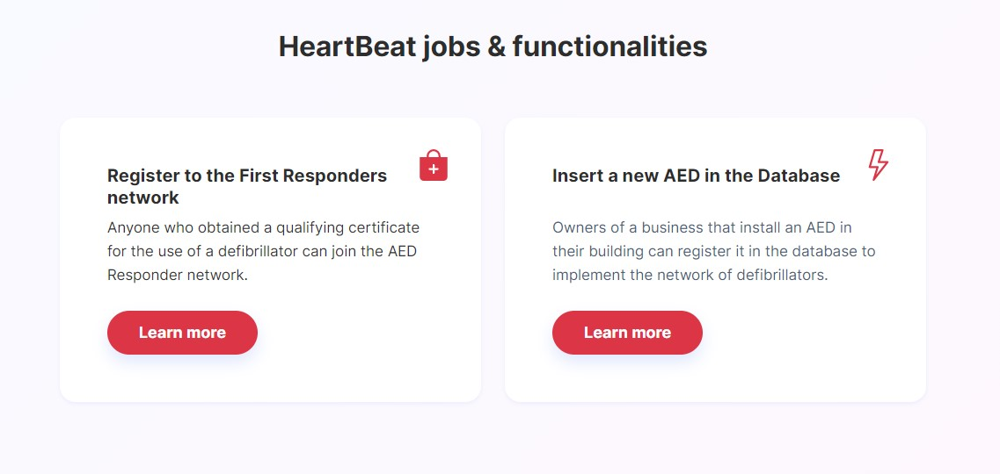

HeartBeat Project
Team Members
- Amaducci Sara: sara.amaducci@studio.unibo.it - 0001024134
- Neri Francesca: francesca.neri26@studio.unibo.it - 0001018826
- Ricci Eleonora: eleonora.ricci13@studio.unibo.it - 0001018800
Our Project
Every year, in Italy, over 50,000 people are victims of sudden cardiac arrest. According to ISTAT, the most frequent causes of death in Italy include ischemic heart diseases, cerebrovascular diseases and other heart diseases.
Defibrillating within 3-5 minutes of the onset of cardiac arrest can lead to survival by up to 50-70%. But if no one intervenes, their chances of survival drop 10-12% for every minute that passes.
In the event of a cardiac arrest, early intervention by people present on site, through the first resuscitation maneuvers and the use of semi-automatic defibrillators, can be decisive for the patient's survival.
The project HeartBeat aims at facilitating rapid defibrillation from publicly available Automated External Defibrillators (AED), through the creation of a system with the following functions:
- Register of defibrillators present in the territory
- Integration with the 118 Emergency Communications Center
- Register of the BLSD trained individuals in the region
- Integration and Development of the 118 Management and Cartographic System
- Web portal
- HeartBeat Mobile App
Purpose of the Project
The goal of the project is to minimize the time of intervention in the event of a cardio-respiratory arrest. Defibrillation is the only therapy to trait someone in cardiac arrest and represents one of the key steps in saving a life from sudden cardiac arrest.
The HeartBeat project aims at facilitating rapid intervention from trained individuals while waiting for the ambulance to arrive. This includes the creation of a unique register of defibrillators that stores data homogeneously in the territory.
At the same time, it aims at creating a network of first responders who, after the attainment of a qualifying certificate for the use of a defibrillator, enroll themselves in the register of the BLSD trained individuals and agree to intervene in case of a medical emergency.
Demo of the Project
Domain Exploration ↵
Scope of Work
Scope of Work Overview
This section describes the environment in which this project can be used. The software is designed as an extension of the management software used by the 118 Emergency Communications Centers. This latter allows 118 operators to follow each step related to an emergency request, allowing them to manage the following types of services:
- Emergency / urgent transport;
- Secondary transport;
- Transport by helicopter rescue.
The Emergency Communications Center makes use of advanced technological solutions that guarantee the security of call reception systems, the user's exact location and real-time control of the position of the available emergency vehicles.
The region of Emilia Romagna has 3 Communications Centers , each of which has an advanced telecommunication system for receiving and sorting all requests.
In case of medical emergency, it is of primary importance the obtainment of the exact localization of the event together with an immediate evaluation of the urgency level of the call.
The staff at the time of answering:
- Locates the event, using a dedicated management software equipped with an advanced cartographic module;
- Evaluates the severity of the event and assigns a priority to the request with a color code;
- Sends an emergency vehicle that is suitable for the emergency;
- Coordinates the development of the rescue intervention, identifying hospital facilities that are suitable for the rescued patients;
Once on site, the personnel sent proceeds to assess the injured person and, after the stabilization and first aid maneuvers, contact the communications center to transmit the patient's data, the situation encountered and to obtain information regarding the hospital to which possibly go.
Work Context Diagram
The context diagram showed below outlines how external entities interact with the software system.
Stakeholders and Actors
The HeartBeat project is not designed for a specific market share, but it concerns the well-being of the entire territorial community.

First responders represent the core identity of the software, so users can be considered as the main actors of the software system.
We can identify two main macro-categories of users, which are not mutually exclusive:
On one hand, people who obtained a qualifying certificate for the use of a defibrillator - and therefore know the maneuvers to implement in the event of cardiac arrest - belong to the network of first responders.
On the other hand, business owners who install an AED in the building and register it through the application, have a fundamental role in implementing the network of publicly available defibrillators.
As we said before, being part of one category does not exclude the other one: a user who registers a new AED and is trained to use it, is also a first responder.
Ubiquitous Language
Ended: Domain Exploration
System Use Cases ↵
Analysis of Subdomains
In this section we will describe in more specific and precise detail the steps that the system takes in the course of its functioning.

After the event storming phase, three main basic subdomains have been identified:
- Emergency Progress Management (core)
- User Account Management (generic)
- AED Database Management (supporting)
To facilitate our understanding, we decomposed the domain into subdomains. In this way, we are able to separate what in fact generates value, and thus, we can analyze more in dept all the aspects of the specific subdomains.
We identified the Emergency Progress Management as the core subdomain as it represents the activity that is uniquely performed by the system.
Then, the User Account Management constitutes the generic subdomain as it does not generate value for the system.
And finally, the AED Database Management supports the system in performing its main function.it
![UML diagram image]( "UML diagram")